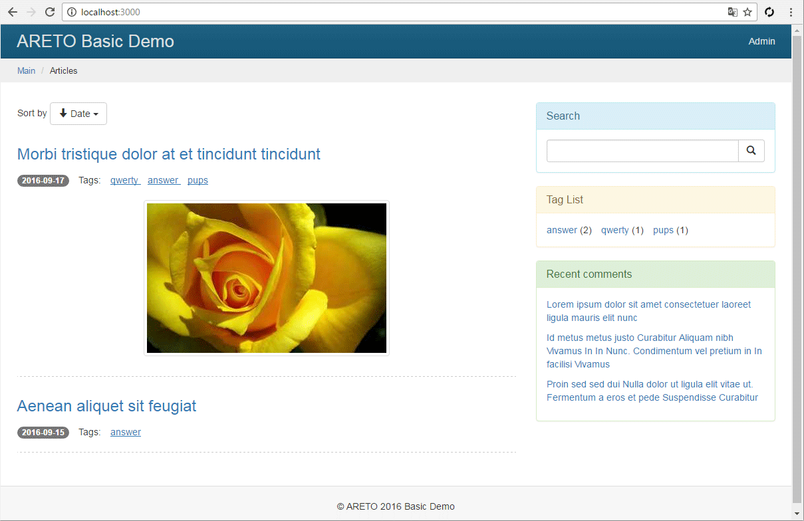

Начало
Цель
Создать многопользовательский блог на прогрессивной платформе Node.js и базе данных MongoDB, используя фреймворк Areto.
Возможности
- Создание, редактирование статей
- Поиск
- Обработка изображений, генерация миниатюр, водяной знак
- Тэги к статьям
- Управление комментариями
- Регистрация, аутентификация и авторизация пользователей
- Ролевое распределение доступа к ресурсам
- Модуль администрирования блога
- Серверные задачи по таймеру
Требуемое окружение
Для разработки блога понадобится следующее окружение:
- Сервер Node.js
- Сервер базы данных MongoDB
- JavaScript IDE - Visual Studio Code (или подобное)
Версии программного обеспечения доступны как для Linux, так и для Windows систем.
Готовый исходный код блога доступен на github